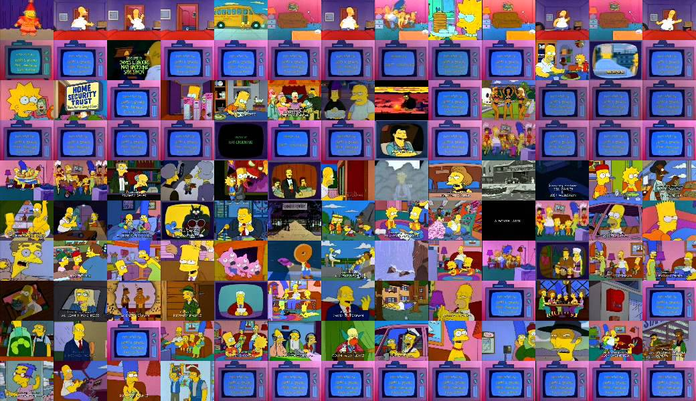

"The Simpsons" has aired over 700 episodes, each filled with humor, satire, and memorable moments. Here are a few notable episodes:
"Simpsons Roasting on an Open Fire" (Season 1, Episode 1): The very first episode where Homer becomes a mall Santa to make extra money for Christmas.
"Marge vs. the Monorail" (Season 4, Episode 12): A classic episode where Springfield builds a faulty monorail, and Homer becomes its conductor.
"Who Shot Mr. Burns?" (Parts 1 & 2, Seasons 6 and 7): A two-part mystery episode where Mr. Burns is shot, leading to a town-wide investigation.
"Homer's Phobia" (Season 8, Episode 15): An episode that addresses the topic of homophobia through the character of John, a gay man who befriends the Simpsons.
"Treehouse of Horror" Series: An annual Halloween special featuring three separate, self-contained stories with horror themes.
you can know about more episodes by clicking of this link:simpronsepisodes